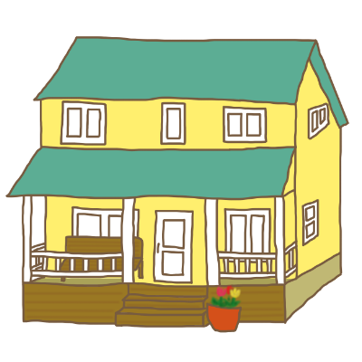

バンデカンプ家と愉快な仲間たち
ザ・バンデカンプス・シリーズに登場する主なキャラクターを紹介します
バンデカンプ家
The Vandekamps

アメリカ西南中部の小綺麗でかわいらしい町
パンダズカウンティの〈黄色いおうち〉に住む愉快な一家
バーバラ Barbara
Barbara Barbara Vandekamp
バンデカンプ家のママ。
派手で気が強く細かいことは気にしない。
口喧嘩なら誰にも負けないが、人の気持ちに敏感な一面もある。
長所：自分の望みを常に把握しそれに向かって行動する
短所：野心家でありながらめんどくさがり屋
特技：口喧嘩、悪態をつく
自分が楽をするため人に何かをやるように仕向ける
口癖：「バカ」「マジウケる」
バート Burt
Herbert Peter Vandekamp
バンデカンプ家のダッド。
いつも一生懸命で家族思いの愛すべきオバカさん。日本マニア。
長所：いつも犬のように全力でまっすぐ
短所：人に説教して教化しようとする
身につけているものをポイポイしてしまう
特技：筋トレ、料理、ものを作る、哀れな子犬のおめめ
口癖：「ごめんなさい」「やだよ」「いいじゃん」
クリスティン Kristin
Kristin lily Vandekamp
バンデカンプ家の長女。
容姿端麗で人気者の双子の姉。類まれな歌の才能に恵まれている。
長所：大人の考えを持ち度胸がある
短所：癇癪持ちで譲らない
特技：歌、バレエ
口癖：「クリスのせいじゃないもん！」
パクリスティン PaKristin
Panda Kristin Vandekamp
バンデカンプ家の次女。
家族で唯一なぜかアジア人っぽい容姿に生まれた双子の妹。
独特のユーモアセンスを持つ。
長所：発想が豊かでひょうきん
短所：何でも怖がりお世話が必要
特技：独創的な文芸作品を作る
口癖：「パクリのことバカにしてー」
スティーヴ Steve
Steven Herbert Vandekamp
バンデカンプ家の長男。
ずっしりとした元気な赤ちゃん。
ラッセル Russell
バンデカンプ家の元気印。
好奇心旺盛なオスのジャックラッセルテリア。
その他の登場人物
テディーナ Tedina
バートの大学時代の悪友テッド。
大学卒業後、男から女に性転換し、テディーナと名乗っている。
長所：気楽で気軽でノリノリ
短所：全てにおいて適当でいい加減
口癖：「イヤン」
アル Al
Albert Vandekamp
バートのこわいパパ。
元軍人の歯科医師で、そっくりな双子の弟ロイと共に
セレブ向け審美歯科のビジネスを成功させた実業家。
長所：男気があり動じない
短所：決して妥協せず威圧的
ナタリー Natalie
Natalie Baker
パンダズカウンティ図書館の司書。
パクリスティンの憧れの優しいお姉さん。
運動が好きでバートのジム仲間でもある。
長所：情熱的で猪突猛進
短所：周りが見えないくらい突っ走る
亮太朗 Ryotaro
本多 亮太朗
バートの中学時代の旧友。
日本人の父と日系アメリカ人の母の間に生まれ、日米を行き来して育つ。
長所：慎重で羽目を外さない
短所：被害妄想が拭えず思い詰めやすい
ネイオミ Naomi
Naomi Goldberg
パンダズカウンティの〈赤いおうち〉に住むゴールドバーグ家の一人娘。
クリスティンとパクリスティンのお友だち。
レネ Renee
Renee Goldberg
ネイオミのママ。
子供好きで家事が得意。
長所：世話好きで面倒見がよい
短所：人の物がすぐ羨ましくなる